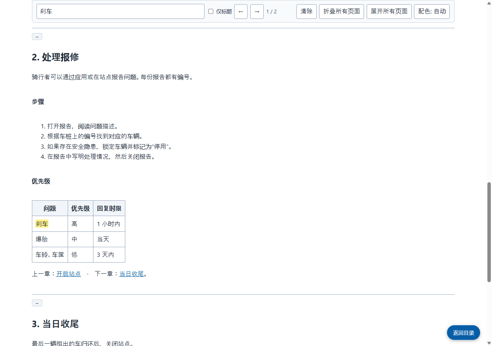

Grab All Files 的真实输出
将手册的四个页面合并为一个 HTML 文件（Pro）
从虚构手册的目录页出发，跟随链接取得三个章节，把四个页面合并成一个 HTML 文件。顶部的目录可跳转到各章，搜索框可搜索整份文档。章节之间的链接会指向保存文件内对应的页面。插图以图片形式存放在文件内。
输出文件
打开保存的 HTML 并搜索“刹车”（由本站截取的截图）

制作方式
- 源页面
- /samples/source/zh_CN/bike-share-handbook/
- 扩展程序
- Grab All Files 5.8.20
- 浏览器
- Chrome 155.0.8059.85 (Windows 11)
- 版本
- Pro
- 制作日期
- 2026-10-21
- 设置
- 页面范围：跟随本页的链接（4 个页面）
- 外观：整理为易读格式
- 输出：带目录和搜索（标准）
- AI 数据：不生成（默认）